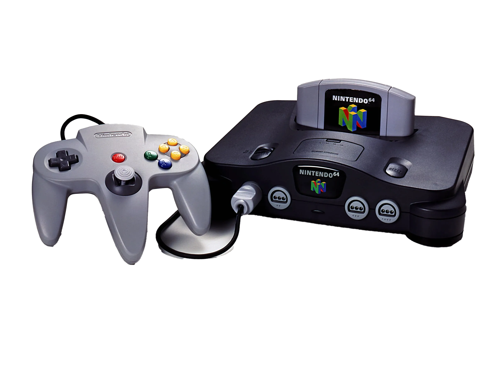
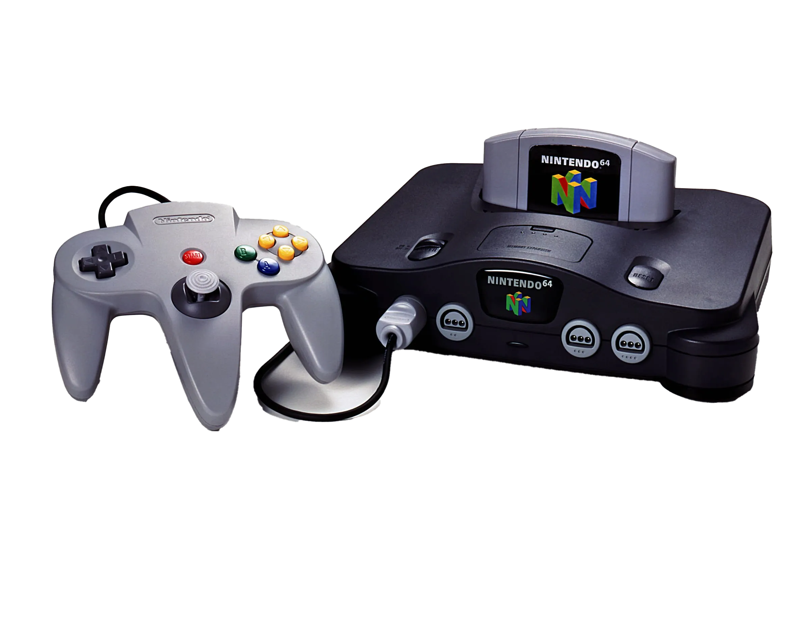

In the quiet hush of early morning, the city seemed to hold its breath. Streetlights flickered like tired sentinels, casting long shadows across the pavement. A soft mist curled through the alleys, blurring the edges of reality just enough to make the familiar feel strange. At a corner café, the aroma of freshly brewed coffee began to seep into the air, a small signal that life was beginning again. Somewhere in the distance, a train rumbled awake. The day, though still wrapped in grey, was stirring.
Tamagotchi is a handheld digital pet created in Japan by Akihiro Yokoi of WiZ and Aki Maita of Bandai. First released in 1996, it quickly became a global phenomenon, captivating children and adults alike. The device features a small, egg-shaped screen where users care for a virtual creature by feeding it, cleaning it, playing games, and ensuring its happiness. Over time, the Tamagotchi can evolve into different forms depending on how well it is cared for, making each user's experience unique. It is considered one of the earliest examples of digital interaction in toy form and has seen multiple reboots and versions over the decades.
The Nintendo 64, often abbreviated as N64, is a home video game console developed and released by Nintendo in 1996. Named after its 64-bit central processing unit, the N64 was a significant leap in gaming technology, bringing fully 3D environments to the mainstream for the first time. It was known for its distinctive three-pronged controller and introduced iconic titles such as Super Mario 64, The Legend of Zelda: Ocarina of Time, and Mario Kart 64. Despite facing stiff competition from Sony's PlayStation, the N64 carved out a lasting legacy with its emphasis on local multiplayer gameplay and innovation in 3D platforming. Today, it is celebrated as a beloved classic that shaped a generation of gamers.
 
